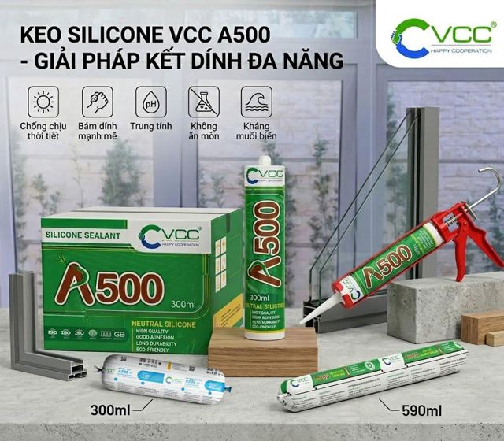
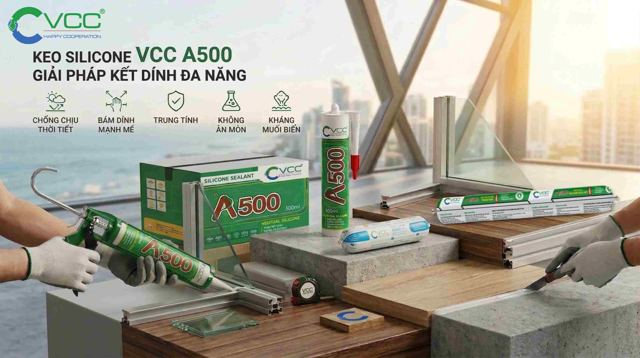
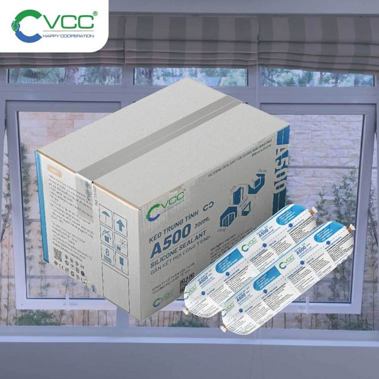
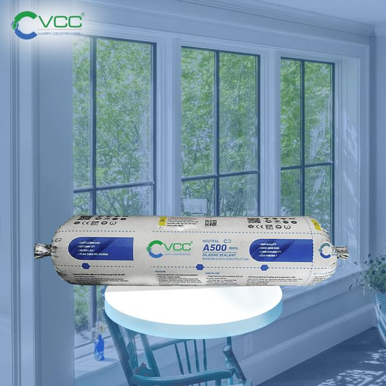
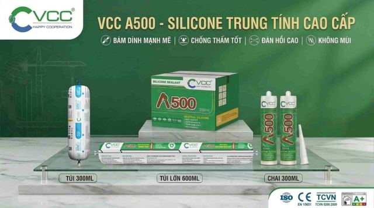

Nhôm
Trám khe cửa sổ, cửa ra vào, mặt dựng kính, cầu thang và lan can khung nhôm. Không làm ăn mòn nhôm.
Keo silicone trung tính · VCC
Bám chắc, chống thấm, co giãn tốt. Một loại keo dùng được cho nhôm, kính, bê tông, gỗ, nhựa PVC và kim loại.
Giá tham khảo trên website: từ 51.500đ

Trám kín khe hở, mối nối và chống thấm, trong nhà lẫn ngoài trời.
Trám khe cửa sổ, cửa ra vào, mặt dựng kính, cầu thang và lan can khung nhôm. Không làm ăn mòn nhôm.
Trám khe giữa kính và khung cửa, ngăn nước, bụi và không khí lọt vào. Dùng cho nhà ở, văn phòng, nhà xưởng.
Trám khe cửa gỗ, đồ nội thất, đồ trang trí ngoài trời. Dùng được cho cả gỗ tự nhiên và gỗ ép.
Trám mối nối ống nước, ống thoát nước, khung cửa nhựa để chống rò rỉ.
Trám lỗ đinh, lỗ ống, chóp mái trên mái tôn; khe hở ở khung cửa và kết cấu kim loại.
Trám khe hở, mối nối bê tông để nước không thấm vào. Còn bám tốt trên gốm sứ, đá.

Chứng nhận: A500 đạt chứng nhận vật liệu xanh LOTUS (VGBC) và LOW VOCs. Các dòng keo silicone của VCC được kiểm định bởi SGS, theo tiêu chuẩn ASTM, đạt nhãn phát thải trong nhà hạng A+ của Pháp và TCVN 8266:2009 (Viện Vật liệu xây dựng cấp).
Theo tài liệu kỹ thuật (TDS) của VCC.
| Loại keo | Silicone trung tính, một thành phần |
|---|---|
| Khô mặt (26°C, ẩm 62%) | 15–20 phút (chai) · 8–12 phút (túi) |
| Khô hoàn toàn (dày 8mm, 25°C, ẩm 60%) | 40 giờ |
| Độ chảy xệ | 0 mm |
| Lực kéo cực đại | 0,8 MPa |
| Độ giãn dài khi đứt | 250–300% |
| Độ cứng Shore A (72h) | 35 |
| Tỷ trọng | 1,5 g/cm³ |
| Khối lượng bay hơi (150°C, 90 phút) | 4% |
| Tốc độ đùn chảy (23°C, ẩm 52%) | 441 ml/phút |
| Nhiệt độ thi công | 4°C – 40°C |
| Nhiệt độ sử dụng | -50°C – 150°C |
| Hạn dùng | 12 tháng (chai) · 18 tháng (túi), nơi khô ráo dưới 27°C |
| Màu (TDS) | Trắng, đen, nâu, màu theo yêu cầu |
| Quy cách thùng | 300ml × 24 chai/thùng · 300ml × 20 túi/thùng · 200L/thùng phuy |



Giá lấy từ trang sản phẩm trên vccsealant.com, có thể thay đổi. Mua số lượng lớn, gọi hoặc nhắn Zalo để nhận báo giá.
Theo VCC, A500 không gây độc hại cho sức khỏe và thân thiện với môi trường. Keo đạt chứng nhận LOW VOCs và chứng nhận vật liệu xanh LOTUS. Keo có mùi rất nhẹ.
Sau khi khô, keo dùng được trong khoảng -50°C đến 150°C. Khi thi công, nhiệt độ nên từ 4°C đến 40°C.
Mặt keo se lại sau khoảng 15–20 phút (dạng chai) hoặc 8–12 phút (dạng túi), đo ở 26°C, độ ẩm 62%. Khô hoàn toàn khoảng 40 giờ với lớp keo dày 8mm (25°C, độ ẩm 60%). Thực tế thường từ 1–3 ngày tùy nhiệt độ và độ ẩm.
Với hầu hết bề mặt thì không cần sơn lót. Bạn nên thử trên bề mặt cần thi công trước rồi mới quyết định.
Keo màu được thêm phụ gia giúp tăng độ bền và chịu lực. Keo trong được làm để giữ độ trong suốt nên thiếu các chất gia cường này. Dù vậy, với hầu hết nhu cầu, keo trong vẫn đủ bền và ổn định.
Không cần bỏ. Bạn cứ để nguyên đầu vòi có keo, đầu vòi sẽ giúp giữ phần keo bên trong. VCC khuyên dùng hết trong vòng 1 tháng và cất nơi khô ráo, thoáng mát, dưới 27°C.
Không dùng để lắp ráp kết cấu (chịu lực chính). Không dùng trên vật liệu tiết ra dầu mỡ, chất làm dẻo hoặc dung môi. Không dùng cho đồng và hợp kim của đồng.
12 tháng với dạng chai và 18 tháng với dạng túi, tính từ ngày sản xuất, nếu cất nơi khô ráo, dưới 27°C và tránh nắng trực tiếp.
Cần tư vấn kỹ thuật hoặc báo giá số lượng lớn, gọi hoặc nhắn Zalo cho VCC.
Tư vấn (CSKH): 0898.83.11.88
Bảo hành: 059.345.8888
CSKH: info@vccsealant.com
Kinh doanh nội địa: sales.domestic@vccsealant.com
Tầng 05, Tòa nhà Sông Hồng, Đường Đỗ Mười, Phường Hoàng Mai, Hà Nội
B136 Tầng B1-R1, TTTM Vincom Mega Mall Royal City, 72A Nguyễn Trãi, Phường Thanh Xuân, Hà Nội
Lô 67 Khu B2-35, KĐT Phước Lý, Phường An Khê, Đà Nẵng
Số 24, Đường 2D nối dài, KDC Nam Hùng Vương, Phường An Lạc, TP. Hồ Chí Minh
145 Đặng Xuân Bảng, Phường Vị Khê, Ninh Bình
336 Phạm Văn Đồng, Phường Thống Nhất, Gia Lai